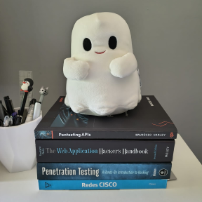
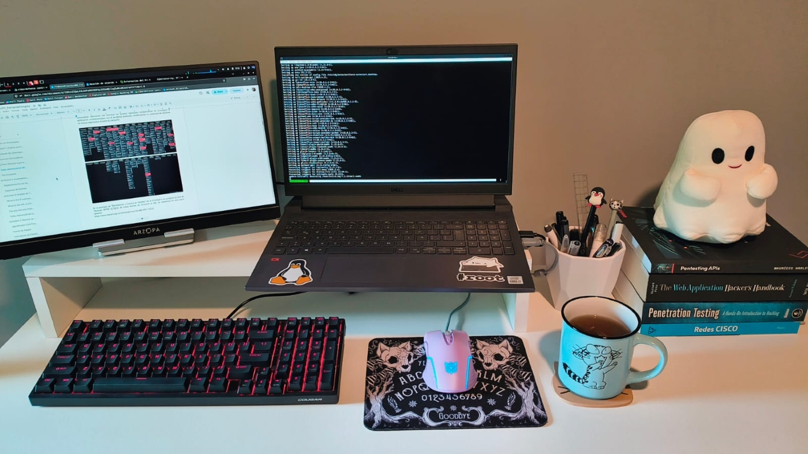

Fernanda Vergara Chávez
Web pentester · Offensive security
Pentester specialized in web application and API security. I document findings with evidence and remediation recommendations.
About
I am a pentester specialized in offensive security for web applications and APIs. I carry out authorized security assessments, with manual testing focused on access control, authentication and business logic, and I deliver reports with evidence, proof of concept and clear remediation recommendations for the teams that have to fix the issues.
My focus is offensive, but during my training I also worked on the defensive side: I deployed monitoring tools and a SOC in lab environments, and performed static and dynamic malware analysis.
Before cybersecurity I worked for more than ten years as a game artist and UI/UX designer in the video game industry, in multidisciplinary teams. I have been studying security since 2023 and, since 2026, I work independently.

Services
Web application pentesting
Manual testing based on the OWASP Top 10: access control, authentication, injection and business logic flaws.
API security
Review based on the OWASP API Security Top 10: broken object level authorization (BOLA), IDOR, weak authentication and excessive data exposure.
Technical report
Findings with evidence, proof of concept, severity and remediation recommendations for the development team.
Projects
-
crAPI Exploitation Lab
Vulnerabilities and exploitation of crAPI (OWASP), with screenshots and recommendations. -
Pentesting Web Labs
Notes and write-ups of web labs (Web for Pentester). -
Academic write-ups
Technical assessments from my Red Team and Blue Team training.
Experience
Web application security assessor
Authorized security assessments for small businesses: reconnaissance, manual testing of the OWASP Top 10, access control and business logic flaws, and technical reports with evidence, PoC and remediation guidance. To date, two assessments completed.
Game artist and UI/UX designer
Career as a game artist and UI/UX designer, working closely with the programming, design and art teams. I built my own project, Roboxel, an asset store for video games. I also helped organize a local video game development community.
Education and credentials
Diplomas
- Advanced Red Team Diploma
- Blue Team Diploma
In progress
- eJPT
- PWPT
Completed courses (selection)
- Practical Web Hacking
- Practical Ethical Hacking
- OWASP API Top 10 crAPI
- Pentesting Cloud AWS
- Linux System Administration Essentials (LFS207)
Tools
- Pentesting
- Burp Suite, Nmap, Metasploit, FFUF, Gobuster, SQLmap, Wireshark
- Systems
- Kali Linux, Linux administration, Bash, Docker, AWS CLI
- Defensive
- Wazuh, Elasticsearch, iptables, Caldera, Sysinternals, PEStudio, Ghidra, Process Hacker
- Methodologies
- PTES, OWASP Top 10, OWASP API Top 10
Contact
I am open to inquiries about web and API security assessments, to job opportunities and to connecting with others in the field.